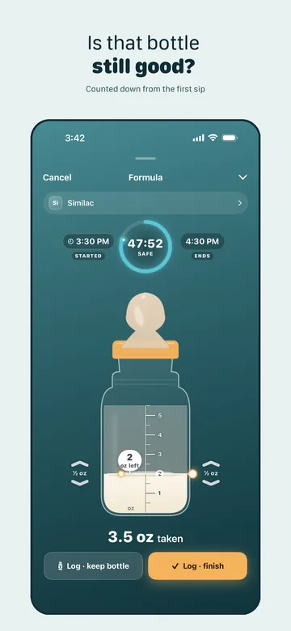
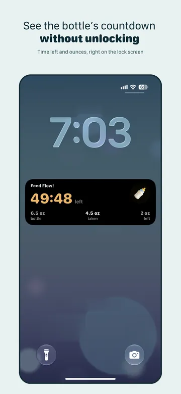
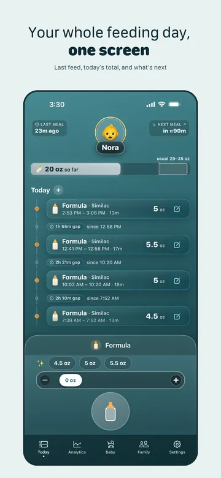
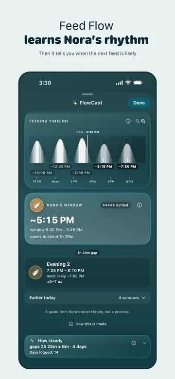
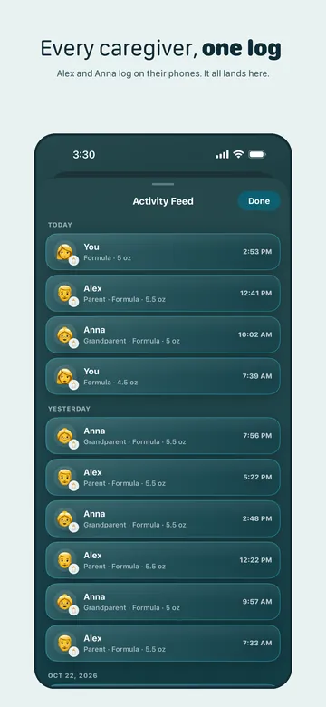
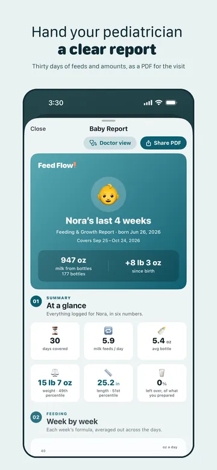

A baby feeding tracker that counts down every bottle
Start a formula bottle in Feed Flow! and a one-hour clock starts with it, so you don't have to remember. Slide the bottle to what's left and the app works out how much your baby drank. It's a formula feeding tracker for iPhone, and a breastfeeding and pumping log too.

From the App Store
Less mental load. More confidence at feeding time.
9 written App Store reviews, all 5★, from parents in Norway and Sweden. Translated reviews are labeled, and the original is always available.
Very useful app! It saves me both time and mental effort, while giving me a clear and easy overview. Definitely worth downloading!
Really enjoy this, startet using it just a few days ago. It really helps structuring and mapping feeding, so we’re always in fair control
Super simple app—it’s helped me keep track of my breastfeeding. I don’t have to worry about my baby going hungry! Great! ⭐️
Love it! Super easy to use, and the FlowCast function actually helps saving formula.
Know when the bottle's hour is up, even with your phone locked
The clock keeps running on your lock screen, so you never unlock the phone to check. Change the hour for each kind of feed. When time's up, Feed Flow! asks how much your baby took.

Every feed in one total, in ml or oz
Log a bottle, a breastfeeding session or a pump in a few taps, with one hand. Every bottle, formula or pumped, adds up to one daily total in ml or oz, with her minutes at the breast beside it.

FlowCast learns your baby's feeding rhythm
After about four days of logging, it shows a likely time for the next feed. Home shows the time. Premium shows the whole day ahead. It's a guide, not a promise.

Everyone who feeds your baby, in one log
Invite your partner, a grandparent or a sitter. Up to five people log to the same baby, free. Premium adds this activity feed, with who fed and when. A new feed can take a moment to show up.

A clear report for the pediatrician
It's made from your own log, with the weekly trend. Print it or send it before the visit. The report is Premium.

- Vitamin D and nutrition. Log the drops and see them counted with what your formula's label lists. Energy, protein, fat and carbs from that label are added up for the day.
- Formula finder. Compare formulas side by side, using the numbers on each label.
Feed Flow! is not a medical device. Before you act on a number, check it against the label, the pack or your pediatrician: this is a record, not medical advice.